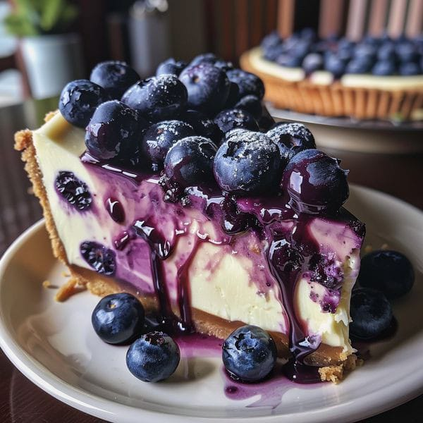

Materials:
- 250 grams of cream cheese (room temperature)
- 80 grams of granulated sugar
- 2 large eggs
- 125 ml of whipping cream
- 1 tablespoon of all-purpose flour
- ½ teaspoon of vanilla extract
- ½ tablespoon of lemon juice
Steps:
- First, preheat the oven to 200°C.
- Next, prepare a baking pan. Line it with crumpled parchment paper for a more rustic look.
- Now, in a mixing bowl, beat the cream cheese and sugar until smooth and creamy.
- Then, add the eggs one at a time, mixing on low speed after each addition.
- After that, stir in the whipping cream, vanilla extract, and lemon juice. Mix until well combined.
- Sift in the flour and gently fold until just combined and there are no lumps.
- Pour the batter into the prepared baking pan.
- Bake in the preheated oven at 200°C for 30-40 minutes, or until the top is deeply browned and looks "burnt."
- For a creamier center, reduce the baking time by about 5 minutes.
- Allow the cheesecake to cool to room temperature before refrigerating it for at least 4 hours to allow the texture to set.
- Finally, cut into slices and serve. Optionally, dust with powdered sugar or top with fresh fruit.
- Use high-quality cream cheese for the best results.
- Avoid overmixing the batter to keep the cheesecake tender.
- For a more caramelized flavor, bake for a longer time until the surface is darker.